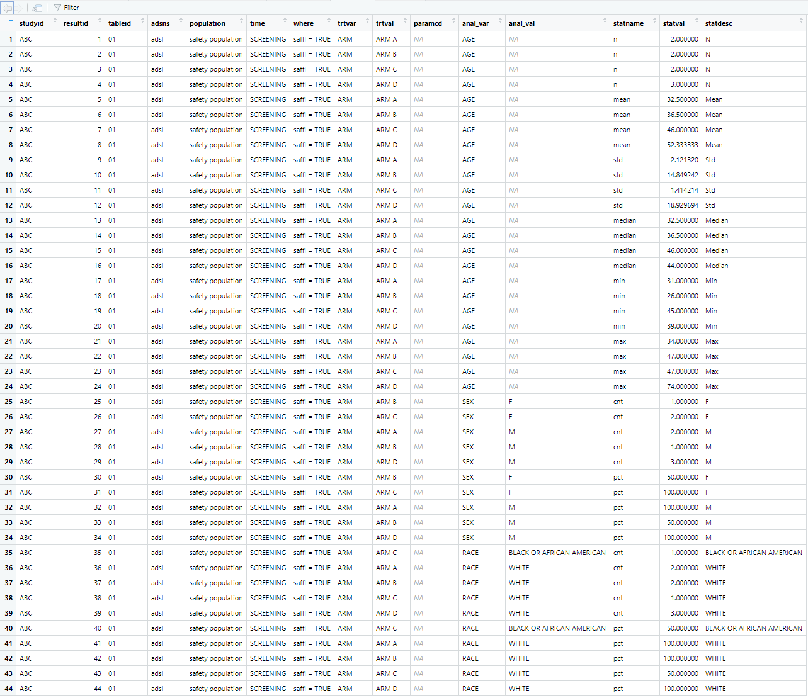

The ards package creates Analysis Results Datasets (ARDS). ARDS are commonly used to store the results of an analysis in a tabular form, so they can be examined and manipulated by downstream processes.
An ARDS dataset is created with the following steps:
- Initialize the ARDS
- Add data to the ARDS
- Extract the completed ARDS
The above three steps are performed with the following functions:
-
init_ards(): A function to initialize the ARDS dataset. This function is typically called at the beginning of a program. -
add_ards(): A function to add data to the ARDS. This function is typically called along the way, as you create analysis data. -
get_ards(): A function to extract the ARDS dataset. This function is typically called at the end of the program.
The above steps result in an ARDS data frame. Once this data frame is extracted, you may save it to disk, or insert it into a database, as desired.
ARDS Structure
The data structure produced by the ards package is structure recommended by CDISC. This structure puts all analysis values into a single column. Therefore, there is one row per analysis value. Descriptive information, such as the the name of the analysis variable and the by groups, are stored in other columns.
Here is the data dictionary for the ARDS dataset:

How to Use ards
To see how the ards functions work, let us first perform a very simple analysis on the mtcars sample data frame. Examine the following example:
library(dplyr)
library(ards)
# Initialize the ARDS
# - These values will be common through the dataset
init_ards(studyid = "MTCARS",
tableid = "01", adsns = "mtcars",
population = "all cars",
time = "1973", reset = TRUE)
# Perform analysis on MPG
# - Using cylinders as a by group
analdf <- mtcars |>
select(cyl, mpg) |>
group_by(cyl) |>
summarize(n = n(),
mean = mean(mpg),
std = sd(mpg),
min = min(mpg),
max = max(mpg))
# View analysis data
analdf
# cyl n mean std min max
# <dbl> <int> <dbl> <dbl> <dbl> <dbl>
# 1 4 11 26.7 4.51 21.4 33.9
# 2 6 7 19.7 1.45 17.8 21.4
# 3 8 14 15.1 2.56 10.4 19.2
# Add analysis data to ARDS
# - These values will be unique per row
add_ards(analdf,
statvars = c("n", "mean", "std", "min", "max"),
anal_var = "mpg", trtvar = "cyl")
# Get the ARDS
# - Remove by-variables to make dataset easier to read
ards <- get_ards() |> select(-starts_with("by"))
# Uncomment to view ards
# View(ards)Here is an image of the ARDS dataset created above:

Realistic Example
As can be seen above, the functions in the ards
package are easy to use.
They can be integrated into a standard Table, Listing, and Figure (TLF)
program, or a data preparation program. In many cases, the program does
not need to be restructured to accommodate the ards
functions. Note that the add_ards() function can be placed
in the middle of existing data pipelines, and will not interfere with
your analysis.
Let us look at a more realistic program. In this demonstration, we will create a Demographics table. The input data for this program is as follows:
library(dplyr)
library(tibble)
library(tidyr)
library(ards)
# Create input data
adsl <- read.table(header = TRUE, text = '
STUDYID DOMAIN USUBJID SUBJID SITEID BRTHDTC AGE AGEU SEX RACE ETHNIC ARMCD ARM
ABC DM ABC-01-049 49 1 11/12/1966 39 YEARS M "WHITE" "NOT HISPANIC OR LATINO" 4 "ARM D"
ABC DM ABC-01-050 50 1 12/19/1958 47 YEARS M "WHITE" "NOT HISPANIC OR LATINO" 2 "ARM B"
ABC DM ABC-01-051 51 1 5/2/1972 34 YEARS M "WHITE" "NOT HISPANIC OR LATINO" 1 "ARM A"
ABC DM ABC-01-052 52 1 6/27/1961 45 YEARS F "WHITE" "UNKNOWN" 3 "ARM C"
ABC DM ABC-01-053 53 1 4/7/1980 26 YEARS F "WHITE" "NOT HISPANIC OR LATINO" 2 "ARM B"
ABC DM ABC-01-054 54 1 9/13/1962 44 YEARS M "WHITE" "NOT HISPANIC OR LATINO" 4 "ARM D"
ABC DM ABC-01-055 55 1 6/11/1959 47 YEARS F "BLACK OR AFRICAN AMERICAN" "UNKNOWN" 3 "ARM C"
ABC DM ABC-01-056 56 1 5/2/1975 31 YEARS M "WHITE" "NOT HISPANIC OR LATINO" 1 "ARM A"
ABC DM ABC-01-113 113 1 2/8/1932 74 YEARS M "WHITE" "UNKNOWN" 4 "ARM D"')
# Initalize ARDS
init_ards(studyid = "ABC",
tableid = "01", adsns = "adsl",
population = "safety population",
time = "SCREENING", where = "saffl = TRUE", reset = TRUE)
# Perform AGE analysis
agedf <- adsl |>
select(AGE, ARM) |>
group_by(ARM) |>
summarize(n = n(),
mean = mean(AGE),
std = sd(AGE),
median = median(AGE),
min = min(AGE),
max = max(AGE)) |>
mutate(analvar = "AGE") |>
ungroup() |>
add_ards(statvars = c("n", "mean", "std", "median", "min", "max"),
statdesc = c("N", "Mean", "Std", "Median", "Min", "Max"),
anal_var = "AGE", trtvar = "ARM") |>
transmute(analvar, ARM,
n = sprintf("%d", n),
mean_sd = sprintf("%.1f (%.2f)", mean, std),
median = sprintf("%.1f", median),
min_max = sprintf("%.1f-%.1f", min, max)) |>
pivot_longer(c(n, mean_sd, median, min_max),
names_to = "label", values_to = "stats") |>
pivot_wider(names_from = ARM,
values_from = c(stats)) |>
transmute(analvar, label = c("N", "Mean (Std)", "Median", "Min-Max"),
trtA = `ARM A`, trtB = `ARM B`, trtC = `ARM C`, trtD = `ARM D`)
agedf
# # A tibble: 4 × 6
# analvar label trtA trtB trtC trtD
# <chr> <chr> <chr> <chr> <chr> <chr>
# 1 AGE N 2 2 2 3
# 2 AGE Mean (Std) 32.5 (2.12) 36.5 (14.85) 46.0 (1.41) 52.3 (18.93)
# 3 AGE Median 32.5 36.5 46.0 44.0
# 4 AGE Min-Max 31.0-34.0 26.0-47.0 45.0-47.0 39.0-74.0
# Get population counts
trt_pop <- count(adsl, ARM) |> deframe()
trt_pop
# ARM A ARM B ARM C ARM D
# 2 2 2 3
# Perform SEX analysis
sexdf <- adsl |>
mutate(denom = trt_pop[paste0(adsl$ARM)]) |>
group_by(SEX, ARM, denom) |>
summarize(cnt = n()) |>
transmute(SEX, ARM, cnt, analvar = "SEX", label = SEX, pct = cnt / denom * 100) |>
ungroup() |>
add_ards(statvars = c("cnt", "pct"), statdesc = "label",
anal_var = "SEX", trtvar = "ARM") |>
pivot_wider(names_from = ARM,
values_from = c(cnt, pct)) |>
transmute(analvar, label,
trtA = sprintf("%1d (%3.0f%%)", `cnt_ARM A`, `pct_ARM A`),
trtB = sprintf("%1d (%3.0f%%)", `cnt_ARM B`, `pct_ARM B`),
trtC = sprintf("%1d (%3.0f%%)", `cnt_ARM C`, `pct_ARM C`),
trtD = sprintf("%1d (%3.0f%%)", `cnt_ARM D`, `pct_ARM D`))
sexdf
# analvar label trtA trtB trtC trtD
# <chr> <chr> <chr> <chr> <chr> <chr>
# 1 SEX F NA ( NA%) 1 ( 50%) 2 (100%) NA ( NA%)
# 2 SEX M 2 (100%) 1 ( 50%) NA ( NA%) 3 (100%)
# Perform RACE analysis
racedf <- adsl |>
mutate(denom = trt_pop[paste0(adsl$ARM)]) |>
group_by(RACE, ARM, denom) |>
summarize(cnt = n()) |>
transmute(RACE, ARM, cnt, analvar = "RACE", label = RACE, pct = cnt / denom * 100) |>
ungroup() |>
add_ards(statvars = c("cnt", "pct"), statdesc = "label",
anal_var = "RACE", trtvar = "ARM") |>
pivot_wider(names_from = ARM,
values_from = c(cnt, pct)) |>
transmute(analvar, label,
trtA = sprintf("%1d (%3.0f%%)", `cnt_ARM A`, `pct_ARM A`),
trtB = sprintf("%1d (%3.0f%%)", `cnt_ARM B`, `pct_ARM B`),
trtC = sprintf("%1d (%3.0f%%)", `cnt_ARM C`, `pct_ARM C`),
trtD = sprintf("%1d (%3.0f%%)", `cnt_ARM D`, `pct_ARM D`))
racedf
# analvar label trtA trtB trtC trtD
# <chr> <chr> <chr> <chr> <chr> <chr>
# 1 RACE BLACK OR AFRICAN AMERICAN NA ( NA%) NA ( NA%) 1 ( 50%) NA ( NA%)
# 2 RACE WHITE 2 (100%) 2 (100%) 1 ( 50%) 3 (100%)
# Combine all analysis into final data frame
final <- bind_rows(agedf, sexdf, racedf)
final
# # A tibble: 8 × 6
# analvar label trtA trtB trtC trtD
# <chr> <chr> <chr> <chr> <chr> <chr>
# 1 AGE N 2 2 2 3
# 2 AGE Mean (Std) 32.5 (2.12) 36.5 (14.85) 46.0 (1.41) 52.3 (18.93)
# 3 AGE Median 32.5 36.5 46.0 44.0
# 4 AGE Min-Max 31.0-34.0 26.0-47.0 45.0-47.0 39.0-74.0
# 5 SEX F NA ( NA%) 1 ( 50%) 2 (100%) NA ( NA%)
# 6 SEX M 2 (100%) 1 ( 50%) NA ( NA%) 3 (100%)
# 7 RACE BLACK OR AFRICAN AMERICAN NA ( NA%) NA ( NA%) 1 ( 50%) NA ( NA%)
# 8 RACE WHITE 2 (100%) 2 (100%) 1 ( 50%) 3 (100%)
# Extract ARDS
ards <- get_ards() |> select(-starts_with("by"))
# Uncomment to view ARDS
# View(ards)Below is the ARDS dataset created by the above code sample: 